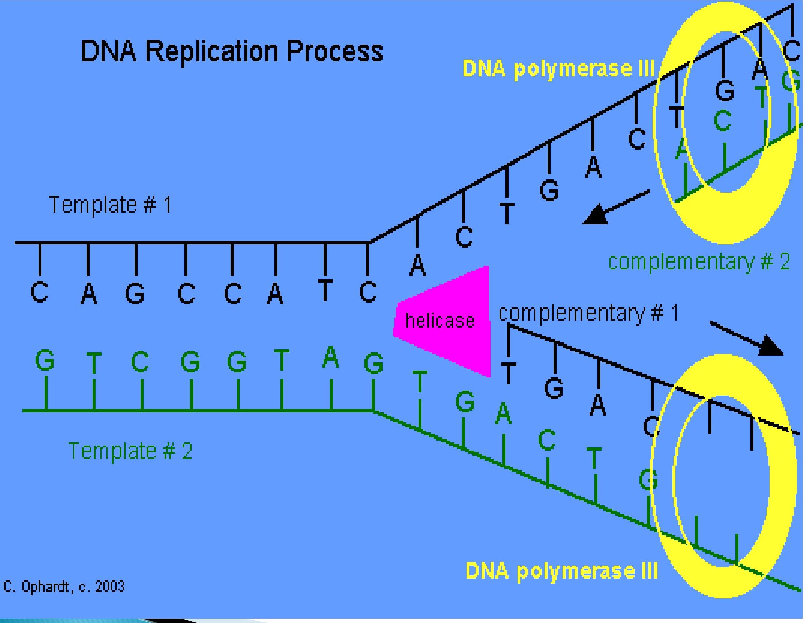

INTRODUCTION TO MICROBIOLOGY
Our focus
- Bacteriology - bacteria
- Virology -viruses
- Mycology -fungi
- Immunology - immunity and vaccination
- Parasitology-Protozoa, helminthes and entomology
- All of medical/human medicine importance
MICROBIOLOGY
Introduction
- Microbiology is the study of microbes.
- Microbiology looks at organisms that are sometimes too small and are viewed using microscope.
- Include bacteria, protozoa, viruses, fungi, parasites.
- Are all parasites microbes?
Shelter / sources
- Dumpsite
- Environment
- Our bodies
- Sickbodies
- Hospital environments
Proportion of microbes
- Pathogens-cause diseases (3%)
- Opportunists - cause disease when opportunity arises (10%)
- Beneficial-harmless
Larger forms of life covered are those that can be viewed at certain times of their life cycle.
Organisms are divided into 2 types:
- Eukaryotes
- Prokaryotes
These are differentiated using their structure, on the nucleus and their method of reproduction
- Eukaryotes are higher plants and animals, protozoa, helminthes, blue green algae
- Prokaryotes are protozoa, viruses (not true prokaryotes), bacteria
Medical Microbiology
Definition of terms
- Commensals - These inhabit certain areas of humans, they are not usually associated with diseases
- True pathogens - Usually associated with diseases. They invade the body and cause diseases
- Pathogenesis refers to cellular processes that are affected during the course of a disease i.e mechanism of tissue attack.
- Aetiology - the organism and it's biological characteristics (not clinical features). Also how the organism is associated with disease
- Clinical presentation refers to the area which deals with symptoms and signse. g fever, body color etc
- Laboratory diagnosis covers the kind of material gotten from patient and taken to the lab.
- Treatment of infection is based on all the above
- Epidemiology is the study of distribution, economic burden, control and prevention of communicable diseases.
- Pandemic?
- Epidemic
- Endemic?
Functions of microbes in the environment
- Food production e.g. yoghurt
- Help in breaking down organic matter used as manure
- Manufacture/production of drugs
- Provide sea food to aquatic organisms
- Used in the brewing industry in the process of fermentation
- Serve as normal flora in our bodies. They inhibit the growth of other microbes by occupying the space which could be occupied by pathogens
- Used in decaying waste to fertilizer
- Organic material is broken to produce biogas
- They help in the digestion of foods in the small intestine
- Used in scientific research
- Used to destroy dangerous chemical pollutants such as DDT and other toxic solvents.
As health care workers we must be aware of microbes, where they live naturally (their sources), how they are transmitted from the source to human beings, what disease they produce and under what conditions and those of us associated with patients to take precaution to prevent the spread of the pathogens.
Transmission of pathogens
They can be spread in the following ways
- From health workers to patients
- Patient to patient
- From contaminated medical equipments
- From contaminated formites
- Patient to health worker
- Patient to other people
Scope of microbiology
There are many fields of study in microbiology specializing in different types of microorganisms.
- General microbiology - includes all microorganisms mainly (study, classification and how they function).
- Medical microbiology-includes pathogens and the disease they cause, how the body defends itself, and the drugs to be administered.
- Veterinary microbiology-animal pathogens.
- Agricultural microbiology-microbes that enrich the soil/ plants
- Sanitary microbiology-microbes at the sewage/latrines
- Industrial microbiology-study business and microbes in the industrial production, monitor and maintain the microbes in the industrial products
- Space microbiology - study the microbes of the space
- Bacteriology deals with bacteria
- Virology deals with viruses
- Parasitology - study of parasites
- Mycology -study of fungi
- Phycology - study of algae
- Protozology - study of protozoa
- Genetic engineering - study of the genes
- Immunology - study of the body's ability to fight disease/body defense system
- Environmental microbiology - study of microbes in environment i.e. soil, water, sewerage, food etc
Historical landmarks in development of microbiology
Discovery of microorganisms.
- Microorganisms were regarded as the cause of disease.
- Development in the areas of disinfection and sterilization.
- Aspects of immunization to prevent diseases.
Development of microbiology
A) Ancient civilization - history
Ancient people believed that diseases originated from gods after wronging them. Some also believed that the knowledge of diseases were myths.
- They had an idea that diseases would be transmitted from the sick person to the healthy ones. Their form of treatment was secretive.
- They isolated themselves from the sick persons through; avoiding shaking of hands, not sharing foods etc.
- They had different forms of treatment such as surgery, bathing of bodies using herbs etc.
- They did not keep reference of treatment procedures.
- They had different hypothesis such as sickness was associated with poor people. They did not have knowledge of the diseases and the microbes.
- Soon after many years scholars and scientists started formulating hypothesis, keeping records and they did different discoveries.
- After these records and discoveries, scholars and scientists started sharing their experiences in conferences
- Ancient microbiology
1) Egypt and Chinese
- Since the beginning of humanity, other living organisms existed. A brief history of ancient civilization is approved that early man had a vague idea about diseases. For instance, Egypt and Chinese people practice washing in water to prevent diseases
- They also knew that disease would be transmitted from one person to another and isolated sick people from the healthy ones to prevent disease. They had an idea that diseases are infectious ie transmitted.
- They also practiced biological warfare .i.e contaminating water with blood, poisoning water and food eaten by their enemies
11) Jews
- They practiced personal hygiene and washing to keep clean.
- They collected dirt to keep the environment clean.
- They isolated the sick from the health.
- They prohibited eating of dead meat.
- They also had a procedure of killing animals for food and designate the parts to be eaten by different people in the community.
B) Middle ages microbiology
During this time knowledge on public sanitation and transmission was lost in Europe and there was a general stagnation of culture and learning and it went on for about 1000 yrs
c) Renaissance microbiology
Due to the negligence of public health, epidemics increased eg small pox, syphilis, rabies. This led to the early practioners to start thinking of the sources and transmission of these diseases. Most people believed that the diseases were curses from gods and started crude methods of treatment eg bleeding.
D) Early pioneers and their contributions in microbiology
- Girolamo 1500s. In 1500 studied syphilis and said it was transmitted through germs from animals to humans and from objects. He had no proof i.e. no test or experiment was carried.
- Johannes Janseen 1590s and Galileo Galilei 1609 and others made contribution towards the discovery of the microscope.
- 1546 - Fracatorius discovered contagion e,g breathing, food etc.
- The first demonstration of microorganism was done in 1675 by Van Leeuwenhoek. He devised a simple microscope known as animalcule. He drew what he saw. He discovered protozoa, blood cells and sperms.
- Louis Pasteur and Robert Koch refined the microscope further and they did tests on the animalcules using the improved microscope. Van Leeuwenhoek was honored as the father of microbiology due to his work
- 1784 - Edward Jenner demonstrated the use of protective vaccination using cow pox. He used lesions of cowpox to inject in humans because it is similar to small pox. Vacca is a latin word meaning cow.
- 1867 - Joseph Lister a British surgeon postulated that certain chemicals when used to clean surgical instruments were disinfective. He used carbonic acid to reduce wound infection rates.
- 1877 - John Tyndal demonstrated sterilization using intermittent heating. This is the origin of the term 'Tyndallization'
- 1876 - Robert Koch demonstrated that B. athracus was the cause of anthrax in man and animals. They joined with Henle to form Henle-Koch's postulates.
- 1857 - Lois Pasteur demonstrated that the fermentation process required microorganisms.
- He developed the process of 'pasteurization'. He heated substances at high temperature and maintains it for some time.
- 1906 Paul demonstrated chemotherapy for syphilis using heavy metals
Lois Pasteur and other scientists in mid 1800s made advance trend in the field of microbiology the advances include:
- The concept of life must arise from preexisting life
- Development sterilization and pasteurization techniques i.e boiling milk
- Germ theory of fermentation
- Germ theory of disease
- Developed vaccines from killed or attenuated microbes/ bacteria
During this period, the scientists kept records and discovered the relationship between microbes, disease and human life through the use of defined microscopes
From the 19th century to date, "Golden age", there are discoveries of antibiotics, new bacteria, vectors, ways of disease transmission and new drugs.
- John Snow did some work on cholera by mapping location of disease.
- He traced it to a bore hole and it was treated.
Robert Koch
- he discovered pure culture research through extensive experiments and wrote reports and hypothesis concerning his research.
- He endeavored to find out experimentally the connection between microbes, how and where they are grown and can they be recovered from their colonies.
- In 1876, he established a procedure to proof the germ theory of disease; which states "a specific disesease is caused by a specific pathogen'.
Koch's postulates
They help in assigning a disease a causative agent. They are as follows:
- An organism must be constantly present in the lesions for it to be incriminated as a cause of disease
- The organism must be recovered in the pure culture
- When inoculated in to susceptible animal it should reproduce the disease
- The organism should be recovered from the animal
The above postulates help in explaining the following important factors in microbiology:
- The importance of laboratory culture.
- Transmission and identification of microbes.
- He proved the suitability of culture growth.
- Only susceptible animals can get disease while others cannot due to strong immunity.
Exceptions to Koch's postulates
However with repeated experiments there are some circumstances where these postulates do not apply and these are termed as Exceptions to Koch's postulates. Examples:
- Carrier states-carry the microbes but do not display the symptoms. They can transmit the disease to other people who get infected
- Some microbes are difficult to grow in a laboratory culture and hence difficult to get a pure culture in the organism yet some of these can grow in living cells or organism. Egbacteria that cause leprosy, syphilis, most viruses
- Susceptibility i.e some animals are resistant to diseases eg rats. Some diseases are species specific eg cholera is present in animals but absent in warthogs
- some diseases develop in weakened states of health,these are called opportunistic or secondary diseases and only affect animals with weakened immunity
- Diseases where there are no causative pathogens eg diabetes, hypertension, scurvy. rickets
Koch later went on to prove the aetiologic agents of cholera, plague and tuberculosis.
Cell Theory
- It was proposed in 1838 by two German microbiologists' i.e Mathies and Theore and it stated that all living things are composed of cells.
- Later Rudolf enhanced the theory with the idea that cells must arise from existing ones, in other words life must arise from life.
Bacteria classification
Morphological classification
- Rigid (un branched) several shapes e.g.
- Spheres-cocci. These can be clusters, chains, tetrads or pairs
- Rods e.g. bacilli
- Curved e.g. vibrios
- Branched referred to as Actinomycetes
- Indefinite shape e.g. mycoplasma
- Flexuous un branched e.g. spirochetes
- Miscellaneous e.g. rickettsiae
Biological classification
- It helps in Taxonomy. It is based on consideration of all characteristics, anatomical, ecological, physiological or serological.
Nomenclature of bacteria
- The first name is the genus followed by species e.g staphylococcus aureus.
Microbiological methods
- Microscopy this involves several types of microscopes e.g
- Ordinary light microscope as power of $\times 10-\times 1000$
- Dark ground microscope. It differs with the light microscope because of light arrangement. Light is not direct to the observing eyes.
- Phase contrast detects a three dimensional object
- Fluorescent microscope uses fluorescence
- Electron microscope. It has a resolution of 0.005 mm
microscopy
During microscopy we use:
- Wet preparation - the object is suspended in a liquid
Stained preparation-Gram stain which divides microorganisms into two.
- Gram positive organisms stain purple or blue
- Gram negative microorganisms stain pink
Other stains are:
- Methyleneblue
- Albert stain
- Ziehl-Neelsen stain
- Negative counter
Steps in gram staining
- There are four basic steps of the Gram stain:
- Applying a primary stain (crystal violet) to a heat-fixed smear of a bacterial culture. Heat fixation kills some bacteria but is mostly used to affix the bacteria to the slide so that they don't rinse out during the staining procedure
- The addition of iodine, which binds to crystal violet and traps it in the cell
- Rapid decolorization with ethanol or acetone
- Counterstaining with safranin. Carbol fuchsin is sometimes substituted for safranin since it more intensely stains anaerobic bacteria, but it is less commonly used as a counterstain.
- Culture and isolation
- Sensitivity testing to antimicrobials
- Serology
Bacteria Anatomy
- Bacteria are made of single cells relatively primitive known as Prokaryotic cells. Their size is about 0.4 micrometers therefore they can only be observed using a microscope
- In a microscope they are seen as single cells or aggregates (clusters).
- Some occur in 25, others 4s and others 8s depending on the species. Some form chains
- They vary in shape; they can be spherical e.g. cocci, rod shaped e.g. bacillus. There are also coma shaped ones e.g. vibrio. Some are thin and form spirals and are called spirochetes. There are also thin and elongated ones called filamentous bacteria e.g. Actomycetes
- Bacteria spores are formed from cells mainly bacilli and are a resting phase in the life cycle.
- They are formed from living cells; such organisms are referred to as spore forming.
- The spore retains genetic material and has a hard covering a round it.
- The shapes of spores vary; they can be spherical or oval.
- special stains are used to see them.
Structure of a Bacterium:
Nucleus - (nucleoid)
- Chromatin material - contains genes borne on thread like chromosomes
- Is has a homogeneous materials with nucleus membrane and a nucleolus
- It consists of a single double stranded nucleus.
- It occurs in form of a closed circle.
- It replicates and grows by binary fission not mitosis and contains the genetic material.
Cytoplasm
- Bulk made of soft gel, water and contains a variety of organic and inorganic materials.
- Mostly it contains granules which are the form in which bacteria store reserve materials.
- It contains Ribosomes and lacks organelles e.g. Mitochondria, Endoplasmic Reticulum
Cytoplasmic membrane
- Cytoplasmic membrane - it is thin and made of semi permeable membrane.
- Consists of glycol proteins and different from mammalian cytoplasmic membrane because it lacks cholesterol.
- It provides selective permeability and allows waste products out of cells. It contains enzymes
Cell membrane
- Cell membrane - it is a typical unit membrane composed of phospholipids and proteins.
- The membranes of prokaryotes are distinguished from those of eukaryotic cells by the absence of sterols, the only exception being mycoplasmas, which incorporate them into their membranes when growing in sterolcontaining media.
The major functions of the cell membrane are:
- Selective permeability and transport of solutes into the cell
- Electron transport and oxidative phosphorylation in aerobic species
- The excretion of hydrolytic exoenzymes
- Serves as the site of enzymes and carrier molecules which function in the biosynthesis of DNA, cell wall polymers and membrane lipids
Cell wall
- It is Rigid and this provides support and maintains cell shape
- When broken contains substances absent in mamalial cells called Peptidoglycan (Murein or mucopeptide) it contains N-acetyl muramic acid, and N-acetyl-glucosamine linked alternatively attached to it are pentapeptides to this sugar.
- The composition of these peptides differs.
- Bacteria are classified as gram positive or gram negative according to the Gram staining procedure. The cells are first stained with crystal violet and iodine and then washed with acetone or alcohol. This latter step decolorizes gram negative bacteria but not gram positive bacteria.
- The difference between gram positive and gram negative has been shown to reside in the cell wall.
Quantity of peptidoglycan:
- In gram +ve it is 50-90%
- It also contains Teichoic acid and Teichuronic acid important as it acts as an antigen
- In gram - ve - forms 5-10%
- There are also glycoproteins and glycopolysacharides.
- These are important in gram - ve -because this glycopolysacharides act as a lipopolysacharide and forms an endotoxin.
- The Cell wall is a target of antibiotics e.g. some interfere with its activity.
- Some enzymes e.g. lysozyme - breaks down links between the sugars and the cell wall.
- In addition to osmotic protection, the cell wall plays an essential role in cell division as well as serving as a primer for its own biosynthesis.
Special components of Grampositive cell walls
1. Teichoic acids
- These are water soluble polymers, containing ribitol or glycerol residues joined through phosphodiester linkages.
- They constitute major surface antigens of those gram - positive species which posses them
- They also bind magnesium ion and play a role in the supply of this ion to the cell.
- Most of them also contain large amounts of Dalanine
2. Polysaccharides
- These are neutral sugars such as mannose, a rabinose, galactose, ramnose and glucosamine and acidic sugars such as glucuronic acid and mannuronic acid.
Special components of Gram Negative cell walls
- Lipoprotein - they cross-link the outer membrane and peptidoglycan layer
- Outer membrane - It is a phospholipids bilayer, relatively permeable to small molecules, hydrophilic as well as hydrophobic
- Liposaccharide - they consist of a complex lipid, called lipid A
Ribosomes
- Consist of 70s sedimentation constants and each has 2 units 50s and 30s subunits.
- They are sites for protein synthesis.
Inclusion granules
- Not always present
- They store metabolites
- Presence identifies certain bacteria by staining.
Mesosomes
- Function unclear
- They are involved in mechanism for compartmenting DNA in spore formation.
Capsules
- could be micro capsules or proper capsules
- They are made of gelatinous materials outside the cell wall.
- Consist mainly of water some contain proteins i.e. polypeptide and polysaccharides.
- They protect org. against various agents from other bacteria and also protect against phagocytosis
Flagellum
- Elongated thread-like appendages composed entirely of protein 12-30 nm in diameter.
- They are the organs of locomotion for the forms that posses them.
- A bacterial flagellum is made up of a single kind of protein subunit called flagellin. .
- Flagellin is antigenic
Fimbriae (pilli)
- They are numerous projections found in gram-ve bacteria.
- They are shorter and finer than flagellum.
- They are composed of protein subunits like flagellum.
- Help bacteria to adhere to a surface.
- The type whose is clearly known are the sex pili which play an essential role in the attachment of conjugating cells to each other.
- They transfer DNA from one organism to another. They are also used as receptor sites for certain bacteriophages
- One group of gram positive bacteria, the streptococci, bear an outer layer of extended protein hairs (fimbriae) called M protein. The M protein is the principal surface antigen of the streptococci and is essential for their establishment in the host.
Plasmid
- They are genetic materials that are extra chromosomal.
- They can replicate autonomously.
- Consist of circular double stranded DNA.
- Common in gram - ve bacillus and can be exchanged in closely related organisms.
Endospores
Three genera of bacteria are capable of forming endospores. These are:
- Bacillus - (aerobic gram positive rods)
- Clostridium (anaerobic)
- Sporosarcina (gram positive coccus)
These organisms undergo a cycle of differentiation in response to environmental conditions.
Under conditions of nutritional depletion, each cell forms a single internal spore which is liberated when the mother cell undergoes autolysis. (This is the process of sporulation which involves the production of many new structures, enzymes and metabolites along with the disappearance of many vegetative cell components).
The spore is a resting cell, highly resistant to desiccation, heat and chemical agents.
Under favorable nutritional conditions, the spore germinates to produce a single vegetative cell.
Properties of Endospores
- Core -This is the spore protoplast
- Spore wall - It is the innermost layer surrounding the inner spore membrane. It contains normal peptidoglycan and becomes the cell wall of the germinating vegetative cell
- Cortex - It is the thickest layer of the spore envelop. Its peptoglycan is extremely sensitive to lysozyme, and its autolysis plays a key role in spore germination
- Coat - It is composed of keratine like protein containing many intramolecular disulfide bonds. It is impermeable and thus offers the spores relative resistance to antibacterial chemical agents
- Exosporium - It is a lipoprotein membrane containing some carbohydrate
Nutritional Requirements for Bacterial growth
Varies according to Bacteria
- Hydrogen and oxygen - these are provided in water.
- Carbon - for the synthesis of compounds by some organisms. Obtain it from atmosphere, air, ($\text{CO}_2$.) (Saprophytes are not disease causing). others get it from fatty acids and most pathogenic bacteria belong here.
- Nitrogen - obtained from Ammonia which is incorporated in also from deamination.
- Inorganic salts and minerals - acts as enzyme activators and include K, Na, Ca, Mg, $\text{PO}_4$
- Organic compounds - Amino acid, monosacharides, lipids. These provide growth factors and also used in biosynthesis to larger molecules.
Classification of bacteria
- Strict or obligate aerobes - Require $\text{O}_2$ to remain viable. $\text{O}_2$ is final electron acceptor in the energy production pathways. Waste products are $\text{CO}_2, \text{H}_2\text{O}$ and energy stored by conversion of ADP to ATP. This is the oxidative phosphorylation
- Strict anaerobes - grow and remain viable in absence of $\text{O}_2$. They are easily killed in presence of $\text{O}_2$. e.g this is seen in fermentation and the end products are lactic acid, $\text{CO}_2$, Hydrogen and Alcohol. Energy is produced and stored in the granules. This is known as substrate level phosphorylation
Facultative anaerobes - can utilize either method to obtain energy.
BACTERIAL GROWTH
- Environmental factors influence rate of bacterial growth such as pH, temp, water activity, macro and micro nutrients, oxygen levels, and toxins.
- Conditions tend to be relatively consistent between bacteria.
- Bacterium have optimal growth conditions under which they thrive, but once outside of those conditions the stress can result in either reduced or stalled growth, dormancy (eg formation spores), or death.
- Maintaining sub-optimal growth conditions is a key principle to food preservation.
Temperature
- Low temptend to reduce growth rates which has led to refrigeration being instrumental in food preservation.
Acidity
- Optimal acidity for bacteria tends to be a round pH 6.5 to 7.0 with the exception of acidophiles. Some bacteria can change the pH such as by excreting acid resulting in sub-optimal conditions.
- Water activity?
Oxygen?
- Micronutrients?
Toxins?
Bacteria Growth curve
| Section of curve | Phase | Growth rate |
|---|---|---|
| A | Lag | Zero |
| B | Acceleration | Increasing |
| C | Exponential | Constant |
| D | Retardation | Decreasing |
| E | Maximum stationary | Zero |
| F | Decline | Negative (death) |
Lag phase
- During lag phase, bacteria adapt themselves to growth conditions. It is the period where the individual bacteria are maturing and not yet able to divide.
- During the lag phase of the bacterial growth cycle, synthesis of RNA, enzymes and other molecules occurs.
Exponential Phase
- It is the phase of maximum growth.
- Cells divide at a constant rate. New cell material is being synthesized at a constant rate, but the new material is itself catalytic and the mass increases in an exponential manner.
- This continues until one of 2 things happens: either one or more nutrients in the medium become exhausted, or toxic metabolic products accumulate and inhibit growth.
- For aerobic organisms, the nutrient that becomes limiting is usually oxygen. There is a linear relationship between time and number of cells growth.
- In the human body, bacteria at this time cannot be killed easily, and can easily overwhelm the body.
Maximum Stationary phase
- There is neither growth nor death
- Growth ceases because of exhaustion of nutrients or the accumulation of toxic waste products. In most cases, however, cell turnover takes place in the stationary phase: there is a slow loss of cells through death, which is just balanced by the formation of new cells through growth and division
- Cells can exhibit variation difference in their morphology.
- Some form spores, others produce exotoxins.
Death phase
- After a period of time in stationary phase, which varies with the organism and with the culture conditions, the death rate increases until it reaches a steady level
- Organisms are non viable, incapable of growing even if transferred to a nother culture. They lose selective permeability.
- Accumulation of toxic material occurs and eventually lysis takes place.
BACTERIAL GENETICS
INHERITANCE
- Genetic material in microorganism is in the nucleus
- The bacterial chromosome is a continuous DNA structure approximately 1 nm long.
- The DNA molecule consists of a double helix made up of 2 complementary polynucleotide strands in each of which Purine and Pyrimidine bases are arranged along a backbone made of alternating deoxyribose and phosphate groups.
- The 2 strands are held together by hydrogen bonds between neighboring bases; the stereochemistry is such that hydrogen bonds can be formed only between adenine and thymine (A-T pair) and between guanine and cytosine (G-C pair). Thus a sequence of bases along one strand such as G-C-C-A-C-T-C-A must be matched on the opposite strand by the complimentary sequence of C-G-G-T-G-A-G-T-
- This arrangement has been made in such a manner that bacterial DNA looks like this; sketch the above
The segment that comprises of a full sequence which could code so some enzyme is called a gene. That is;
- A gene is a DNA segment that can code for an enzyme.
- Codon - is a three base pair which could code a specific amino acid
- Genome - full complimentary set of gene found in any bacteria. They range from 1000-3000 normally.
When the genetic material is undergoing replication it starts from a specific point which is initiated by the enzyme DNA polymerase. This enzyme initiates cleavage and runs along the DNA molecule and divides it into 2 complimentary parts which quickly synthesize the other complementary molecule.
There are processes which lead to complete different DNA but most times the daughter cells are similar to the original.
The 2 major processes leading to different daughter cells are
- Mutation
- Gene transfer
1. Mutation
- Any change in genetic material which changes the structure and hence the function of a specific protein constitutes mutation.
- 1. Mutation can be due to sequence changes due to base-pair substitution.
- This can be spontaneous whereby most changes are reversible.
- It can also be induced by mutagenic agents. Mutagenic agents include:
- Radiations e.g. x-rays, ultraviolet light etc
- Chemical agents such as nitrous acid, alkylating agents (e.gethylmethane-sulfonate) proflavine dye
- 2. Mutation can also be due to breakage of sugar phosphate linkages
Mutations mechanisms
Mutations occur by different mechanisms e.g
- Deletion- it is a process whereby a base pair of the genome is deleted e.g.
$$ \begin{array}{lc} T-A-T-C-G-A & \text{Delete C-G} \quad T-A-T-G-A \\ A-T-A-G-C-T & A-T-A-C-T \end{array} $$
- Insertion - A segment of the base pairs is inserted in a new place e.g.
$$ \begin{array}{lc} T-A-T-C-G-A & \text{Insert } T-A \quad T-A-T-T-G \\ A-T-A-G-C-T & A-T-A-A-C \end{array} $$
- Frame shift - may involve folding over, overlap and thus cause a new gene arrangement.
Mutation is a process which can be reversible but some are irreversible.
Example of reversible mutation
Fimbriated organism $\Leftrightarrow$ Non-fimbriated org.
Example of irreversible (this is also referred to as smooth-rough mutation)
Capsulated org $\rightarrow$ Non scroulated
- An organism undergoing from smooth - rough mutation also loses its virulence
- Mutation affects lots of activities in the bacterial cell.
- It can give rise to observable effects e.g. Appearance staining characteristics metabolic activities.
EFFECTS OF MUTATION
- Nonsense mutations - do not influence any activity in an organism.
- Lethal mutations affect key functions in the organism and organism dies
- Conditionally lethal mutations - may affect ability of organism to utilize certain materials but if placed in a condition.... Where we have the substance it can still grow.
2. Gene transfer
Takes place in 3 ways
- Transformation
- Transduction
- Conjugation
a) Transformation
- Refers to the uptake of DNA form environment that is usually released to the environment by already dead bacteria.
- In transformation, the recipient cell takes up soluble DNA released from the donor cell .it occurs in both gram tve and gram - ve bacteria
- It was demonstrated by Griffin (read about it)
b) Transduction
- In this process, a fragment of donor chromosomes is carried to the recipient by a temperate bacteriophage.
- Bacteria acquire new genetic material as a result of transfer by bacteriophages.
- Bacteriophages are virus specialized in infecting bacteria They can cause-- 2 major effects.
- Lysis
- Insert their genetic material into the bacteria which is transferred during division i.e. Temperate
- Both are capable of co-existing with the bacteria for some time.
- Bacteria virulence can be influenced by the bacterial phage e,g, the Diptheria in man.
c) Conjugation
- Involves two closely related org.
- Conjugation refers to transfer of genetic material from one bacterium which is donor (male) to a nother bacterium which is the recipient (Female) through contact.
- It occurs as follows: the cell exudes a special protein thread, called a sex pilus, which is coded for by plasmid genes.
- This thread, which may be several times the length of the cell, has a tip which adheres to gramnegative cell walls. Any gram - negative cell which touches it becomes tethered to the plasmidcontaining cell
Requirements for conjugation
- 2 bacteria cells
- Plasmid
- Sexpili
- Fertility factor (F)
- Transfer factor sex pili (Fimbriae)
- Resistance factor
- Conchlane factor
- Clumping factors
- Plasmid is an extra chromosomal material which is capable of dividing, is transmissible, and has transfer factors.
- Others help in providing resistance to antibiotics and are referred to as Resistance factors (R factors)
- During conjugation the zorganisms came into contact.
- This influences, virulence, sensitivity to antibiotics, and other activities
Restriction endonucleases
- These are unique enzymes which cleave incoming would be cells.
- They find their application in genetic engineering (used in synthesizing some hormones)